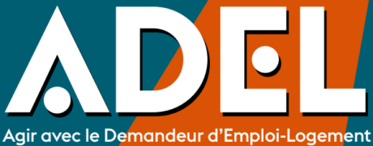
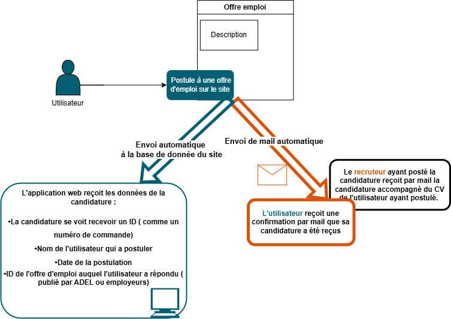
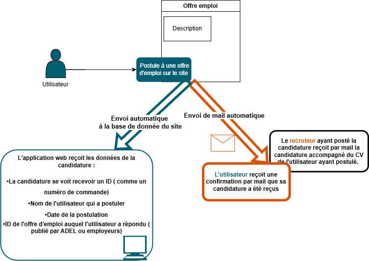
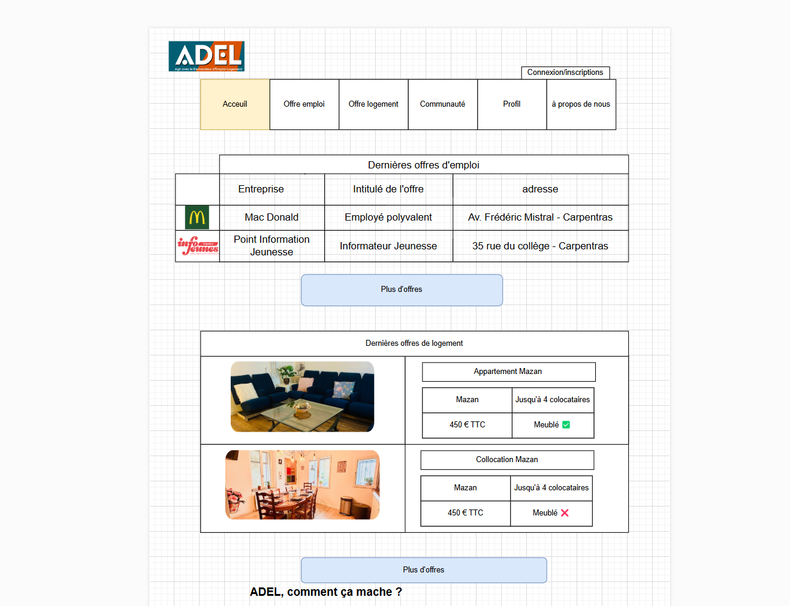
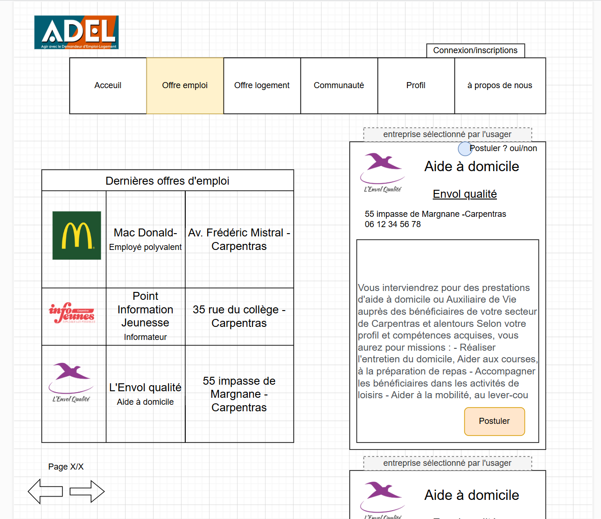
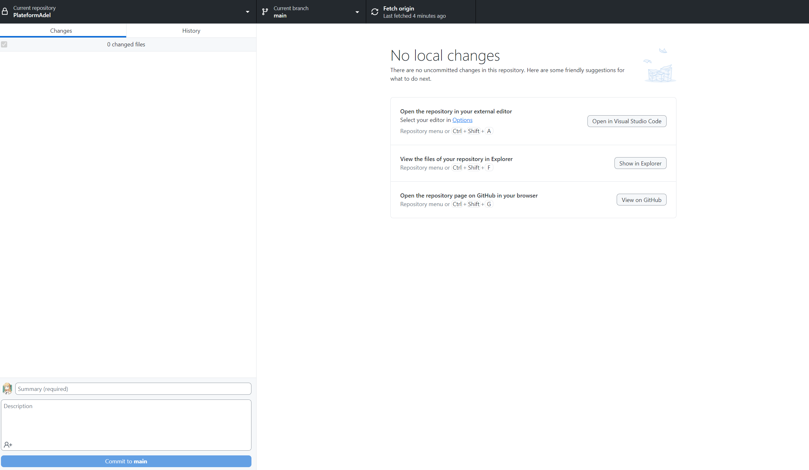
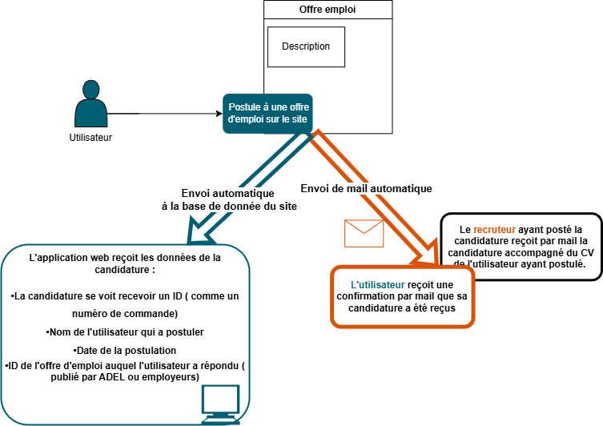

Présentation du service
Description du service et ses activités
Le PIJ est un service de la mairie de Carpentras. Il s'agit d'un lieu d'accueil, d'écoute et d'information pour les jeunes de 12 à 25 ans. Le PIJ propose des informations sur les thématiques suivantes : emploi, formation, logement, santé, loisirs, culture, mobilité internationale et vie quotidienne.
Mes tâches
Développer la présence en ligne de l'organisation
▼ Mise en page
Lorsque le site du PIJ de Carpentras a été crée et mis en ligne. Personne n'a réellement continuer à le mettre à jour et à l'améliorer.
pourtant, le site jouis d'une excellent référencement malgré. Mon travail est donc d'améliorer le design graphique des pages, leur présentation et mettre à jour les informations.
Pour cela, j'utilise le CMS Type, sur lequel a été constuit le site. Il me permet de gérer les pages, l'arboresance du site et leur présentation
▼ Organisation de test d'utilisation du site
Afin de vérifier la facilité d'utilisation du site. J'ai organisé des tests auprès de personnes externes au service. Les utilisateurs qui ont réalisé le test ont dû rechercher des informations précises sur le site, puis répondre aux questionnaires : Les informations étaient-elles faciles à trouver ? Les chemins cohérant ? Ont ils apprécié la mise en page du site ? Ces tests sous forme de jeu m'ont permis de récolter des informations sur la facilité d'utilisation du site sans que les utilisateurs voient cela comme une contrainte.
▼ Restructuration de l'arboresance du site
Après avoir réalisé des tests d'utilisation au prés quelques personnes de notre public. J'ai réalisé que la navigation sur le site n'était pas toujours aisé. c'est pourquoi j'ai totaltament repensé et remodeler la navigation sur le site dans un document de design. Malheureusement ce document est toujours en attente de validation.
▼ Création de documents technique pour assurer la continuité de mes missions
Introduisant de nouvelles fonctions sur le site. J'ai réalisé des documents tutoriel et d'informations pour que mes actions puissent être également réalisé par le service lors de mon départ
La plateforme ADEL
Description du projet
ADEL est un projet sortant légèrement de mes missions habituel.
Nous avons été contacté par une sociologue qui cherchais de l'aide pour lancer son projet ADEL.
ADEL est un dispostif voulant aider et accompagner les personnes en demande de logement et d'emploi pour faciliter et rendre possible leurs recherches (trouver un emploi sans domicile est difficile et l'inverse est également vrai)
Le PIJ soutenant cette action, je me suis proposé dans le cadre de mon BTS de créer le site de la plateforme ADEl
Organisation
Organisation Trello
 

Wireframe


Documentation
Versionning
GitDesktop

Tableau de synthèse
×

Organisation Trello
